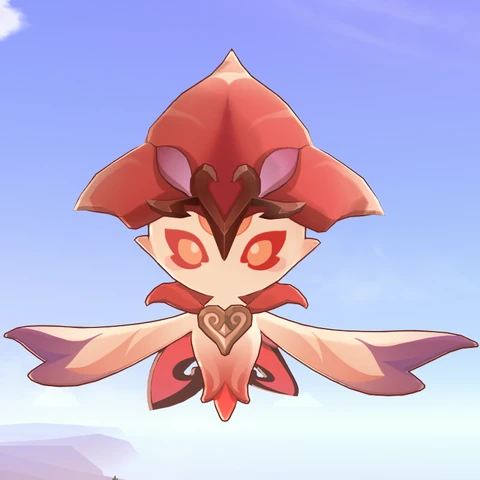

Sumeru · Species & Creatures
Pari
The Pari originate from contact between Simurgh’s Khvarena and Amrita. They are born from Vourukasha Oasis and tasked with holding back defilement; their history is told through Sorush, Zurvan, the Great Songs, and the Fravashi Trees.

Origin and home
In Pale Fire, elder Zurvan says the Pari originated when Simurgh’s Khvarena came into contact with Amrita. She calls them descendants of Khvarena and explains that they are born from Vourukasha Oasis and eventually return there.
Zurvan contrasts Pari with the Aranara, who are born from the land. That is a specific distinction between the two groups, not a complete taxonomy for every spirit or nonhuman people in Teyvat.
A duty to contain defilement
The Pari say their purpose is to prevent defilement from flowing into the land with them. Their life cycle is tied to the oasis and its Amrita Pool, where tainted Pari can be purified before returning home.
The quest Khvarena of Good and Evil places this duty in the crisis around Tunigi Hollow. The Pari and their human allies have guarded the region against Abyssal corruption across generations, but characters disagree about the remedy and what sacrifice it might require.
Sorush and the Great Songs
Sorush is an envoy who hopes to become a Bloomguard. Zurvan initially questions her maturity; with the Traveler’s help, Sorush earns the Twin-Horned Chaplet and the right to gather the Great Songs of Khvarena.
The Hymn of Tir Yazad follows the Rite of Ab-Zohr and the restoration of the Harvisptokhm. It also corrects the assumption that Sorush’s personal sacrifice was the only possible outcome. The songs, the rite, and the choices made around them are related but should not be collapsed into one simple power source.
The Fravashi Trees
Sorush describes the Fravashi Trees as the transformed forms of Pari who fought defilement until they could no longer maintain their shape. Pale Fire lets the Traveler awaken ten such trees and help the residual Pari return to Vourukasha Oasis.
Zurvan is careful about what remains in the trees: she describes the Plumes of Purifying Light as carrying fragmented memories. The quests do not say that a complete, unchanged person has simply been sleeping inside each tree.
What the accounts leave open
The story gives the Pari a distinct origin and connection to Khvarena, Amrita, and their oasis. It does not make them Seelie or Aranara, and the perspectives of Sorush, Zurvan, and Nasejuna should not be treated as equally informed at every point.
The Oceanid pilgrims in Zurvan’s closing story appear to be searching for a deceased god, but Pale Fire does not name that god. Any connection to Egeria must be supported by other evidence rather than inserted into Zurvan’s account as a stated fact.
This is an original CoreGG reading guide, not an official HoYoverse article or a reproduction of the game text. Source links below identify the records used so you can check the original context.
Sources & references
Check these sources for the original game text and reference trail.